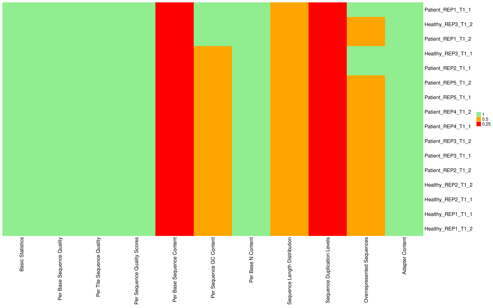
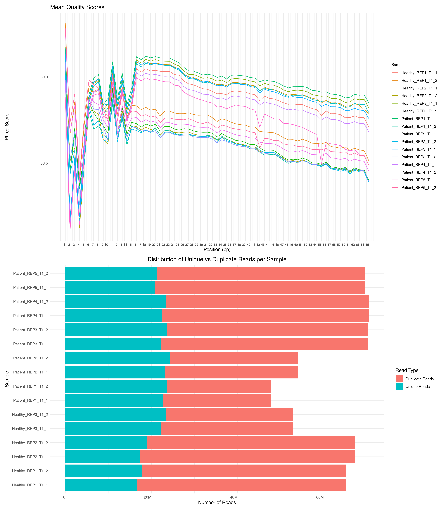
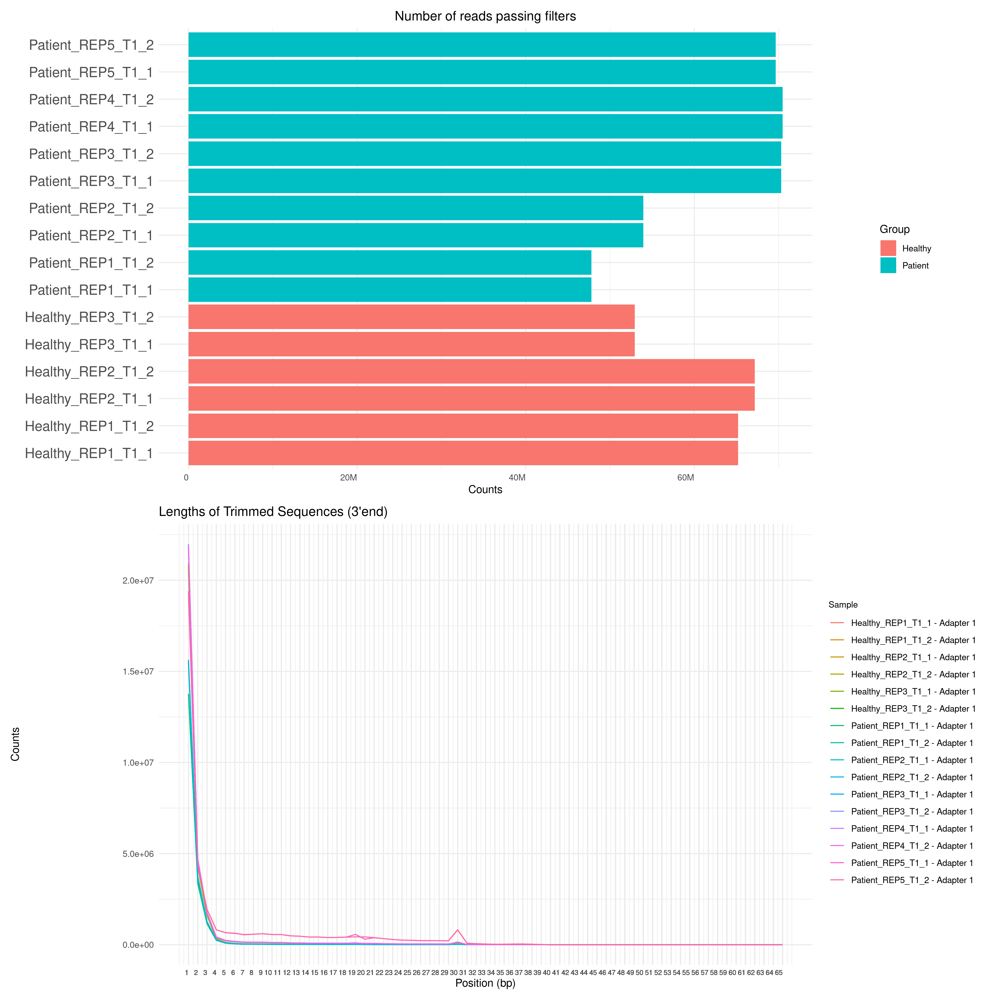
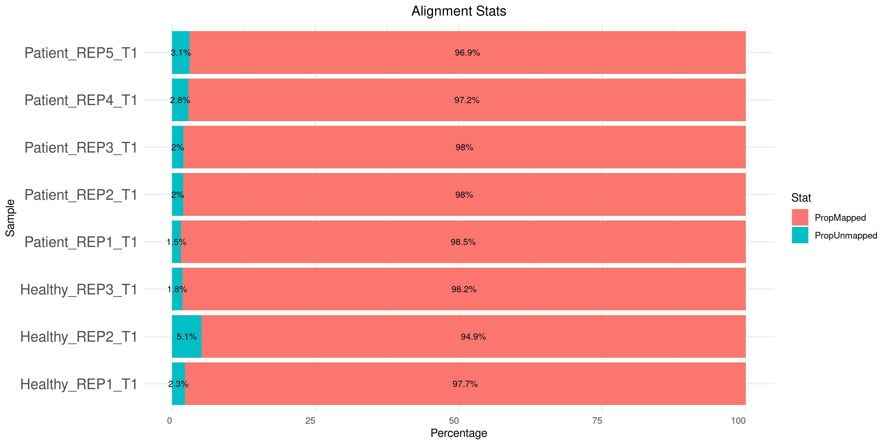
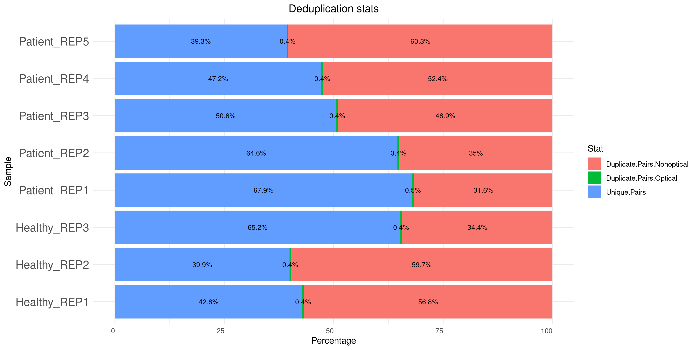

Last updated: 2026-09-10
Checks: 7 0
Knit directory: NK_cells/
This reproducible R Markdown analysis was created with workflowr (version 1.7.2). The Checks tab describes the reproducibility checks that were applied when the results were created. The Past versions tab lists the development history.
Great! Since the R Markdown file has been committed to the Git repository, you know the exact version of the code that produced these results.
Great job! The global environment was empty. Objects defined in the global environment can affect the analysis in your R Markdown file in unknown ways. For reproduciblity it’s best to always run the code in an empty environment.
The command set.seed(20260903) was run prior to running
the code in the R Markdown file. Setting a seed ensures that any results
that rely on randomness, e.g. subsampling or permutations, are
reproducible.
Great job! Recording the operating system, R version, and package versions is critical for reproducibility.
Nice! There were no cached chunks for this analysis, so you can be confident that you successfully produced the results during this run.
Great job! Using relative paths to the files within your workflowr project makes it easier to run your code on other machines.
Great! You are using Git for version control. Tracking code development and connecting the code version to the results is critical for reproducibility.
The results in this page were generated with repository version f6e162a. See the Past versions tab to see a history of the changes made to the R Markdown and HTML files.
Note that you need to be careful to ensure that all relevant files for
the analysis have been committed to Git prior to generating the results
(you can use wflow_publish or
wflow_git_commit). workflowr only checks the R Markdown
file, but you know if there are other scripts or data files that it
depends on. Below is the status of the Git repository when the results
were generated:
Ignored files:
Ignored: .Rhistory
Ignored: .Rproj.user/
Untracked files:
Untracked: .Rprofile
Untracked: .gitignore
Untracked: NK_cells.Rproj
Untracked: _workflowr.yml
Untracked: data/
Untracked: output/
Unstaged changes:
Modified: analysis/differential_analysis.Rmd
Modified: analysis/index.Rmd
Note that any generated files, e.g. HTML, png, CSS, etc., are not included in this status report because it is ok for generated content to have uncommitted changes.
These are the previous versions of the repository in which changes were
made to the R Markdown (analysis/preprocessing.Rmd) and
HTML (docs/preprocessing.html) files. If you’ve configured
a remote Git repository (see ?wflow_git_remote), click on
the hyperlinks in the table below to view the files as they were in that
past version.
| File | Version | Author | Date | Message |
|---|---|---|---|---|
| html | f6e162a | dchi0030 | 2026-09-04 | Update index page |
| Rmd | 7906a05 | dchi0030 | 2026-09-04 | intitial commit |
| html | 7906a05 | dchi0030 | 2026-09-04 | intitial commit |
8 bulk ATAC-seq samples from our collaborator (Prof. Kirsty Short) sequenced at the Hudson were received Hui Xu on the 21/08/2026. Thee 8 samples are prepared from sorted human NK cells. Samples 1, 2, 4 are healthy controls, and samples 6-10 are obese patients.The aim of the analysis was to identify the differentially accessible regions (DARs) between healthy and obese patients following.
Processing of the raw data including quality control checks, trimming, alignment and initial peak calling was done using the nf-core/atacseq v2.1.2, a description of of the output is found here. Pre-processing was done on the M3-Massive HPC cluster using the following script:
The quality control checks were performed using the MultiQC tool, which aggregates results
from multiple tools into a single report. The MultiQC report can be
found in the output/NFCore_ATACseq/multiqc/narrow_peak/
directory. The following sections provide an overview of the quality
control metrics for each sample.
Status for each FastQC section showing whether results seem entirely normal (green), slightly abnormal (orange) or very unusual (red)

FastQC status check post trimming - normal - green, slightly abnormal-orange or very unusual - red
The plots below show the quality scores for the sequences for each library and estimated levels of duplication per library.

Mean Quality Scores and Sequence counts for each sample
Download mean-qc-scores-seq-counts-plots-1.pdf
Adaptor Trimming
The figures below provide an overview of the number of reads after trimming for adaptor sequences.

Number of reads passing filters after trimming
Read alignment was performed using bwa as part of the NFCore/ATAC pipeline against the Human GRCh38 reference genome. The plots below show the number of reads aligning to the reference genome and the proportion of reads that were mapped and unmapped for each sample.
The barplot below shows the proportion of mapped and unmapped reads for each sample.Overall, the mapping efficiency was high for all samples, with most samples having a mapping rate above 90%. This indicates that the majority of reads were successfully aligned to the reference genome, suggesting good quality of the sequencing data.

Barplot showing mapping stats
The barplot below shows the proportion of duplicate and unique reads for each sample. Overall, the proportion of non-optical duplicates (PCR duplicates) was high for 5 of the 8 samples which may indicate that the libraries were over-amplified during PCR. The proportion of optical duplicates was low for all samples, suggesting that the sequencing process was efficient and did not introduce significant technical artifacts.

Barplot showing the proportion of duplicate and unique reads
seed-set-by-workflowrset.seed(20260903)
setupoptions(bitmapType='cairo')
library(knitr)
library(ggplot2)
library(dplyr)
library(tidyr)
library(ComplexHeatmap)
library(ggrepel)
library(ggpubr)
library(ggplotify)
library(ggvenn)
library(ggseqlogo)
library(patchwork)
library(viridis)
library(formatR)
library(sva)
if (!requireNamespace("downloadthis", quietly = TRUE)) {
install.packages("downloadthis")
}
library(downloadthis)
knitr::opts_chunk$set(
echo = F,
dpi = 150,
error=FALSE,
warning = F,
dev = c("png","pdf"),
message = F)
setup2#Create directories for analysis
analysis.path<-"output/"
if(!dir.exists(analysis.path))
dir.create(analysis.path,showWarnings = T,recursive = T)
analysis.tables<-file.path("docs/tables/")
if(!dir.exists(analysis.tables))
dir.create(analysis.tables, recursive = T)
plots.dir <- file.path("docs/plots/")
if(!dir.exists(plots.dir))
dir.create(plots.dir, recursive = T)
source("code/globalfun.R")
unnamed-chunk-1knitr::opts_chunk$set(fig.path = plots.dir)
# custom hook: after each plot chunk, append a download link
knitr::knit_hooks$set(
plot = function(x, options) {
xx <- gsub("png$", "pdf", x)
fig_link <- xfun::embed_file(xx, text = paste0("Download ", basename(xx)))
paste0(knitr::hook_plot_md(x, options), "\n\n", fig_link, "\n")
}
)
unnamed-chunk-2#!/bin/bash
workdir=NK_cells/
mkdir -p $workdir
cd $workdir
# Load necessary modules
module load nextflow
export NXF_SINGULARITY_CACHEDIR="/home/davidc/ws30_scratch2/Chisangad/singularity/"
export APPTAINER_CACHEDIR="/home/davidc/ws30_scratch2/Chisangad/.apptainer/"
samplesheet=data/Samplesheet.csv
profile_config=~/ws30_scratch2/Chisangad/BioinfoTools/NFCore_profiles/NFCore_CutnRun.config
nextflow run nf-core/atacseq --input ${samplesheet} -c ${profile_config} \
-profile 'slurm,singularity' \
--genome GRCh38 \
--mito_name chrM \
--macs_gsize 2913022398 \
--outdir NFCore_ATACseq \
-resume \
--narrow_peak true \
--blacklist ~/ws30_scratch2/Chisangad/genomes/blacklist/hg38-blacklist.v2.bed \
-bg true
unnamed-chunk-3multiqc_path<-"docs/multiqc/narrow_peak/multiqc_data"
unnamed-chunk-4#Read all the processed results once!
fastqc_heat.data <- read.table(
file.path(multiqc_path, "/fastqc-status-check-heatmap-1.tsv"),
sep = "\t",
stringsAsFactors = F,
col.names = c("Name", "Sample", "Value"),
header = T
) %>% pivot_wider(
names_from = Name,
# The column to get new column names from
values_from = Value # The column to get cell values from
) %>% tibble::column_to_rownames(var = "Sample") %>% as.matrix()
fastqc.seqcount1 <- read.delim(
paste0(
multiqc_path,
"/mqc_fastqc_sequence_counts_plot_1.txt"
),
sep = "\t",
header = T
) %>% pivot_longer(
cols = c("Unique.Reads", "Duplicate.Reads"),
names_to = "Read_Type",
values_to = "Count"
)
trim.filt_reads <- read.delim(
file.path(
multiqc_path,
"/mqc_cutadapt_filtered_reads_plot_1.txt"
),
header = T
)
trim.seq_counts<- read.delim(file.path(
multiqc_path,
"mqc_cutadapt_trimmed_sequences_plot_3_Counts.txt"
),header = T)
align.stats <- read.delim(file.path(
multiqc_path, "mqc_samtools_alignment_plot_1.txt")) %>% mutate(Total=Mapped+Unmapped) %>%
mutate(PropUnmapped=Unmapped/Total*100,PropMapped=Mapped/Total*100)
dup.stats <- read.delim(file.path(
multiqc_path,
"mqc_picard_deduplication_1.txt")) %>%
pivot_longer(cols = c("Unique.Pairs","Duplicate.Pairs.Optical",
"Duplicate.Pairs.Nonoptical"),
names_to = "Stats",values_to = "Reads")
peak.qual <- read.csv(file.path(multiqc_path,"/PeakMetrics.csv"))
peak_count.stats_conc <- as.matrix(read.delim(
file.path(multiqc_path,"/multiqc_mrep_peak_count-plot.txt"),
fill = T,
header = T,
row.names = 1
))
FRiP.stats_conc <- as.matrix(read.delim(
file.path(multiqc_path,"/multiqc_mrep_frip_score-plot.txt"),
fill = T,
header = T,
row.names = 1
))
frip.plot_data<-data.frame(
Sample=rownames(FRiP.stats_conc),
FRiP=diag(FRiP.stats_conc)*100
)
peak.annotation_stats <- read.delim(
file.path(multiqc_path,"/multiqc_mlib_peak_annotation-plot.txt")
) %>% pivot_longer(
cols = c(
"Intergenic",
"TTS",
"Unassigned",
"exon",
"intron",
"promoter.TSS"
),
names_to = "Stats",
values_to = "Peak_count"
)
peak.annotation_stats$group <- gsub("_REP.*","",peak.annotation_stats$Sample)
peak.annotation_stats <- peak.annotation_stats %>% mutate(Stats=forcats::fct_reorder(Stats,Peak_count,.desc = F))
annotation.conc.stats<-read.delim(
file.path(multiqc_path,"/multiqc_mrep_peak_annotation-plot.txt"),
fill = T,
header = T
) %>% pivot_longer(
cols = c(
"Intergenic",
"TTS",
"Unassigned",
"exon",
"intron",
"promoter.TSS"
),
names_to = "Stats",
values_to = "Peak_count"
) %>% mutate(Stats=forcats::fct_reorder(Stats,Peak_count,.desc = F))
fcounts.stats <- read.delim(file.path(
multiqc_path,
"/multiqc_featureCounts_mlib_featurecounts.txt"
)) %>% pivot_longer(
cols = c(
"Assigned","Unassigned_NoFeatures","Unassigned_Overlapping_Length"),
names_to = "Stats",
values_to = "Reads"
) #%>% mutate(Stats=forcats::fct_reorder(Stats,Reads,.desc = T))
save(
fastqc_heat.data,
fastqc.seqcount1,
trim.filt_reads,
trim.seq_counts,
align.stats,
dup.stats,
peak.qual,
peak_count.stats_conc,
FRiP.stats_conc,
frip.plot_data,
peak.annotation_stats,
annotation.conc.stats,
fcounts.stats,
file = "output/processed_data.RData"
)
unnamed-chunk-5load("output/processed_data.RData")
heatmap-after-trimmingComplexHeatmap::Heatmap(
fastqc_heat.data,
col = c("red", "orange", "lightgreen"),
show_row_dend = F,
show_column_dend = F,
cluster_columns = F,
row_names_gp = grid::gpar(fontsize = 12),
heatmap_legend_param = list(title = "")
)
mean-qc-scores-seq-counts-plotsbar.fastqc_seq <- ggplot(fastqc.seqcount1, aes(x = Sample, y = Count, fill = Read_Type)) +
geom_col() +
coord_flip() + # Flip coordinates to make it horizontal
scale_y_continuous(labels = scales::label_number(scale_cut = scales::cut_short_scale())) +
labs(title = "Distribution of Unique vs Duplicate Reads per Sample",
x = "Sample",
y = "Number of Reads",
fill = "Read Type") +
theme_minimal() +
theme(
axis.text.x = element_text(
angle = 0,
hjust = 1,
vjust = 1
),
plot.title = element_text(hjust = 0.5)
)
fastqc.seqqual <- read.delim(
paste0(
multiqc_path,
"/mqc_fastqc_per_base_sequence_quality_plot_1.txt"
),
sep = "\t",
header = T
)
fastqc.seqqual <- pivot_longer(
fastqc.seqqual,
cols = colnames(fastqc.seqqual)[-1],
names_to = "Position",
values_to = "Phred_Score"
)
fastqc.seqqual$Position <- as.numeric(gsub("X", "", fastqc.seqqual$Position))
fastqc.seqqual_fig<-ggplot(fastqc.seqqual,aes(x=Position,y=Phred_Score,colour=Sample))+
geom_line()+
scale_x_continuous(breaks =fastqc.seqqual$Position)+
labs(title = "Mean Quality Scores",
x = "Position (bp)",
y = "Phred Score") +
theme_minimal()+
theme(
legend.title = element_text(size = rel(0.8)), # 80% of base size for title
legend.text = element_text(size = rel(0.8)), # 80% of base size for labels
axis.text.x = element_text(
hjust = 1,
vjust = 1,
size = rel(0.8)))
(fastqc.seqqual_fig/bar.fastqc_seq)
unnamed-chunk-6trim.seq_counts<-pivot_longer(
trim.seq_counts,
cols = colnames(trim.seq_counts)[-1],
names_to ="Positions",
values_to = "Counts")
trim.seq_counts$Positions<-as.numeric(gsub("^X","",trim.seq_counts$Positions))
trim.filt_reads$Group<-gsub("_REP.*","",trim.filt_reads$Sample)
barplot-reads-after-trimmingbar.cut_trim <- ggplot(trim.filt_reads, aes(
x = Sample, y = Reads.passing.filters,fill = Group)) +
geom_col() +
coord_flip() + # Flip coordinates to make it horizontal
scale_y_continuous(labels = scales::label_number(
scale_cut = scales::cut_short_scale())) +
labs(title = "Number of reads passing filters",
x = "",
y = "Counts",
fill= "Group") +
theme_minimal() +
theme(
axis.text.x = element_text(
angle = 0,
hjust = 1,
vjust = 1
),
axis.text.y = element_text(
size = 14
),
plot.title = element_text(hjust = 0.5)
)
trim.seq_counts_fig<-ggplot(trim.seq_counts,aes(x=Positions,y=Counts,colour=Sample))+
geom_line()+
scale_x_continuous(breaks =trim.seq_counts$Positions)+
labs(title = "Lengths of Trimmed Sequences (3'end)",
x = "Position (bp)",
y = "Counts") +
theme_minimal()+
theme(
legend.title = element_text(size = rel(0.8)), # 80% of base size for title
legend.text = element_text(size = rel(0.8)), # 80% of base size for labels
axis.text.x = element_text(
hjust = 1,
vjust = 1,
size = rel(0.8)
),
)
(bar.cut_trim / trim.seq_counts_fig)
unnamed-chunk-7align.stats <-
pivot_longer(align.stats,
cols = c(
"PropUnmapped",
"PropMapped"
),
names_to = "Stat",
values_to = "Percentage")
barplot-mapping-statsggplot(align.stats, aes(
x = Sample, y = Percentage,fill =Stat)) +
geom_col() +
coord_flip() +
scale_y_continuous(labels = scales::label_number(
scale_cut = scales::cut_short_scale())) +
labs(title = "Alignment Stats",
x = "Sample",
y = "Percentage",
fill= "Stat") +
geom_text(
aes(label = paste0(round(Percentage,digits = 1),"%")),
position = position_stack(vjust = 0.5),
size = 3
) +
theme_minimal() +
theme(
axis.text.x = element_text(
angle = 0,
hjust = 1,
vjust = 1
),
axis.text.y = element_text(
size = 14
),
plot.title = element_text(hjust = 0.5)
)
unnamed-chunk-8dup.stats$Percentage<-apply(dup.stats,1, function(x){
as.numeric(x[["Reads"]])/sum(as.numeric(dup.stats$Reads[dup.stats$Sample==x[["Sample"]]]))*100
})
unique.stats<-dup.stats[dup.stats$Stats=="Unique.Pairs",]
barplot-duplicate-unique-readsggplot(dup.stats, aes(
x = Sample, y = Percentage,fill =Stats)) +
geom_col() +
coord_flip() +
scale_y_continuous(labels = scales::label_number(
scale_cut = scales::cut_short_scale())) +
labs(title = "Deduplication stats",
x = "Sample",
y = "Percentage",
fill= "Stat") +
geom_text(
aes(label = paste0(round(Percentage,digits = 1),"%")),
position = position_stack(vjust = 0.5),
size = 3
) +
theme_minimal() +
theme(
axis.text.x = element_text(
angle = 0,
hjust = 1,
vjust = 1
),
axis.text.y = element_text(
size = 14
),
plot.title = element_text(hjust = 0.5)
)
embed-multiqcknitr::include_url("multiqc/narrow_peak/multiqc_report.html", height = "800px")
unnamed-chunk-9include_dir_download("docs/multiqc/narrow_peak","MultiQC_Report")
session-info-chunk-inserted-by-workflowrsessionInfo()
R version 4.5.1 (2025-06-13)
Platform: x86_64-pc-linux-gnu
Running under: Ubuntu 22.04.5 LTS
Matrix products: default
BLAS: /mnt/software/apps/R/4.5.1/lib/R/lib/libRblas.so
LAPACK: /mnt/software/apps/R/4.5.1/lib/R/lib/libRlapack.so; LAPACK version 3.12.1
locale:
[1] LC_CTYPE=en_AU.UTF-8 LC_NUMERIC=C
[3] LC_TIME=en_AU.UTF-8 LC_COLLATE=en_AU.UTF-8
[5] LC_MONETARY=en_AU.UTF-8 LC_MESSAGES=en_AU.UTF-8
[7] LC_PAPER=en_AU.UTF-8 LC_NAME=C
[9] LC_ADDRESS=C LC_TELEPHONE=C
[11] LC_MEASUREMENT=en_AU.UTF-8 LC_IDENTIFICATION=C
time zone: Australia/Melbourne
tzcode source: system (glibc)
attached base packages:
[1] grid stats graphics grDevices utils datasets methods
[8] base
other attached packages:
[1] downloadthis_0.5.0 sva_3.56.0 BiocParallel_1.42.2
[4] genefilter_1.90.0 mgcv_1.9-4 nlme_3.1-170
[7] formatR_1.14 viridis_0.6.5 viridisLite_0.4.3
[10] patchwork_1.3.2 ggseqlogo_0.2.2 ggvenn_0.1.19
[13] ggplotify_0.1.3 ggpubr_1.0.0 ggrepel_0.9.8
[16] ComplexHeatmap_2.24.1 tidyr_1.3.2 dplyr_1.2.1
[19] ggplot2_4.0.3 knitr_1.51 workflowr_1.7.2
loaded via a namespace (and not attached):
[1] RColorBrewer_1.1-3 rstudioapi_0.19.0 jsonlite_2.0.0
[4] shape_1.4.6.1 magrittr_2.0.5 magick_2.9.1
[7] farver_2.1.2 rmarkdown_2.31 GlobalOptions_0.1.4
[10] fs_2.1.0 vctrs_0.7.3 Cairo_1.7-0
[13] memoise_2.0.1 base64enc_0.1-6 rstatix_1.1.0
[16] htmltools_0.5.9 broom_1.0.13 Formula_1.2-6
[19] gridGraphics_0.5-1 sass_0.4.10 bslib_0.12.0
[22] lubridate_1.9.5 cachem_1.1.0 whisker_0.4.1
[25] mime_0.13 lifecycle_1.0.5 iterators_1.0.14
[28] pkgconfig_2.0.3 Matrix_1.7-6 R6_2.6.1
[31] fastmap_1.2.0 GenomeInfoDbData_1.2.14 MatrixGenerics_1.20.0
[34] clue_0.3-68 digest_0.6.39 colorspace_2.1-3
[37] AnnotationDbi_1.70.0 S4Vectors_0.50.2 ps_1.9.3
[40] rprojroot_2.1.1 RSQLite_3.53.3 bsplus_0.1.5
[43] labeling_0.4.3 timechange_0.4.0 httr_1.4.8
[46] abind_1.4-8 compiler_4.5.1 bit64_4.8.4
[49] withr_3.0.3 doParallel_1.0.17 S7_0.2.2
[52] backports_1.5.1 carData_3.0-6 DBI_1.3.0
[55] ggsignif_0.6.4 rappdirs_0.3.4 rjson_0.2.23
[58] tools_4.5.1 otel_0.2.0 zip_3.0.2
[61] httpuv_1.6.17 glue_1.8.1 callr_3.8.0
[64] promises_1.5.0 getPass_0.2-4 cluster_2.1.8.3
[67] generics_0.1.4 gtable_0.3.6 car_3.1-5
[70] XVector_0.48.0 BiocGenerics_0.54.1 foreach_1.5.2
[73] pillar_1.11.1 stringr_1.6.0 yulab.utils_0.2.4
[76] limma_3.64.3 later_1.4.8 circlize_0.4.18
[79] splines_4.5.1 lattice_0.23-1 survival_3.8-11
[82] bit_4.6.0 annotate_1.86.1 tidyselect_1.2.1
[85] locfit_1.5-9.12 Biostrings_2.76.0 git2r_0.36.2
[88] gridExtra_2.3.1 IRanges_2.42.0 edgeR_4.6.3
[91] stats4_4.5.1 xfun_0.60 Biobase_2.68.0
[94] statmod_1.5.2 matrixStats_1.5.0 stringi_1.8.9
[97] UCSC.utils_1.4.0 yaml_2.3.12 evaluate_1.0.5
[100] codetools_0.2-20 tibble_3.3.1 cli_3.6.6
[103] xtable_1.8-8 processx_3.9.0 jquerylib_0.1.4
[106] dichromat_2.0-1 Rcpp_1.1.2 GenomeInfoDb_1.44.3
[109] png_0.1-9 XML_3.99-0.24 parallel_4.5.1
[112] blob_1.3.0 scales_1.4.0 purrr_1.2.2
[115] crayon_1.5.3 GetoptLong_1.1.1 rlang_1.3.0
[118] KEGGREST_1.48.1